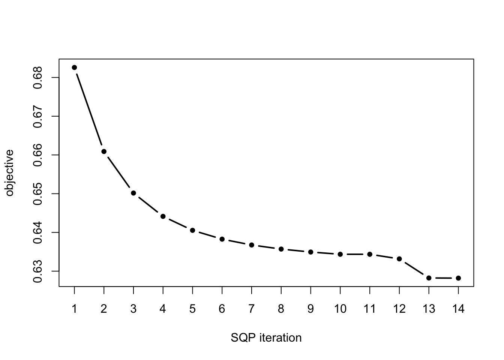

vignettes/mixsqp-intro.Rmd
mixsqp-intro.RmdIn this vignette, we illustrate the use of the sequential quadratic programming (SQP) algorithm implemented in mixsqp, and we compare its runtime and accuracy against an interior-point (IP) solver implemented by the MOSEK commercial software (it is called by the “KWDual” function in the REBayes package).
If you do not have the Rmosek and REBayes packages installed on your computer, you may skip over these steps in the vignette.
Load the mixsqp package.
library(mixsqp)Next, initialize the sequence of pseudorandom numbers.
set.seed(1)We begin with a small example to show how mixsqp works.
L <- simulatemixdata(1000,20)$L
dim(L)
# [1] 1000 20This call to simulatemixdata created an \(n \times m\) conditional likelihood matrix for a mixture of zero-centered normals, with \(n = 1000\) and \(m = 20\). By default, simulatemixdata normalizes the rows of the likelihood matrix so that the maximum entry in each row is 1.
Now we fit the mixture model using the SQP algorithm:
fit.sqp <- mixsqp(L)
# Running mix-SQP algorithm 0.1-121 on 1000 x 20 matrix
# convergence tol. (SQP): 1.0e-08
# conv. tol. (active-set): 1.0e-10
# zero threshold (solution): 1.0e-08
# zero thresh. (search dir.): 1.0e-15
# l.s. sufficient decrease: 1.0e-02
# step size reduction factor: 7.5e-01
# minimum step size: 1.0e-08
# max. iter (SQP): 1000
# max. iter (active-set): 21
# number of EM iterations: 4
# iter objective max(rdual) nnz stepsize max.diff nqp nls
# 1 +6.825854615e-01 -- EM -- 20 1.00e+00 3.43e-02 -- --
# 2 +6.608901307e-01 -- EM -- 20 1.00e+00 1.12e-02 -- --
# 3 +6.501637781e-01 -- EM -- 20 1.00e+00 8.83e-03 -- --
# 4 +6.441429557e-01 -- EM -- 20 1.00e+00 7.64e-03 -- --
# 1 +6.441429557e-01 +7.692e-02 20 ------ ------ -- --
# 2 +6.398064355e-01 +3.950e-02 20 9.90e-01 4.28e-01 21 1
# 3 +6.296311434e-01 +5.905e-03 20 9.90e-01 4.84e-01 21 1
# 4 +6.282317544e-01 +1.663e-04 17 9.90e-01 5.86e-03 18 1
# 5 +6.281982044e-01 +1.773e-06 6 9.90e-01 2.75e-04 17 1
# 6 +6.281978492e-01 +1.774e-08 4 9.90e-01 2.98e-06 4 1
# 7 +6.281978456e-01 +1.774e-10 4 9.90e-01 2.98e-08 2 1
# Convergence criteria met---optimal solution found.In this example, the SQP algorithm converged to a solution in a small number of iterations.
By default, mixsqp outputs information on its progress. It begins by summarizing the optimization problem and the algorithm settings used. (Since we did not change these settings in the mixsqp call, all the settings shown here are the default settings.)
After that, it outputs, at each iteration, information about the current solution, such as the value of the objective (“objective”) and the number of nonzeros (“nnz”).
The “max(rdual)” column shows the quantity used to assess convergence. It reports the maximum value of the “dual residual”; the SQP solver terminates when the maximum dual residual is less than conv.tol, which by default is \(10^{-8}\). In this example, we see that the dual residual shrinks rapidly toward zero.
Another useful indicator of convergence is the “max.diff” column—it reports the maximum difference between the solution estimates at two successive iterations. We normally expect these differences to shrink as we approach the solution, which is precisely what we see in this example.
This information is also provided in the return value, which we can use, for example, to create a plot of the objective value at each iteration of the SQP algorithm:
numiter <- nrow(fit.sqp$progress)
plot(1:numiter,fit.sqp$progress$objective,type = "b",
pch = 20,lwd = 2,xlab = "SQP iteration",
ylab = "objective",xaxp = c(1,numiter,numiter - 1))
To assess the accuracy of the SQP solution, we can compare against the solution computed by the IP algorithm. (If you do not have the REBayes package installed, you can skip this step.)
fit.ip <- mixkwdual(L)If you run the IP algorithm, you should see that the IP and SQP solutions achieve nearly the same objective value.
cat(sprintf("Objective at SQP solution: %0.16f\n",fit.sqp$value,digits = 16))
cat(sprintf("Objective at IP solution: %0.16f\n",fit.ip$value,digits = 16))
cat(sprintf("Difference in objectives: %0.4e\n",fit.sqp$value - fit.ip$value))We observed that the SQP and IP methods achieve nearly the same solution quality in the example above. Here, we explore the computational properties of the SQP and IP algorithms in a larger data set.
As before, we compute the \(n \times m\) likelihood matrix for a mixture of zero-centered normals. This time, we use a finer grid of \(m = 100\) normal densities, as well as many more samples.
L <- simulatemixdata(1e5,100)$L
dim(L)
# [1] 100000 100Now we fit the model using the SQP algorithm:
timing <- system.time(fit.sqp <- mixsqp(L))
cat(sprintf("Computation took %0.2f seconds\n",timing["elapsed"]))
# Running mix-SQP algorithm 0.1-121 on 100000 x 100 matrix
# convergence tol. (SQP): 1.0e-08
# conv. tol. (active-set): 1.0e-10
# zero threshold (solution): 1.0e-08
# zero thresh. (search dir.): 1.0e-15
# l.s. sufficient decrease: 1.0e-02
# step size reduction factor: 7.5e-01
# minimum step size: 1.0e-08
# max. iter (SQP): 1000
# max. iter (active-set): 100
# number of EM iterations: 4
# iter objective max(rdual) nnz stepsize max.diff nqp nls
# 1 +6.740034242e-01 -- EM -- 100 1.00e+00 8.05e-03 -- --
# 2 +6.466159203e-01 -- EM -- 100 1.00e+00 2.22e-03 -- --
# 3 +6.355010165e-01 -- EM -- 100 1.00e+00 1.58e-03 -- --
# 4 +6.297174676e-01 -- EM -- 100 1.00e+00 1.45e-03 -- --
# 1 +6.297174676e-01 +7.931e-02 100 ------ ------ -- --
# 2 +6.267517521e-01 +9.881e-02 100 9.90e-01 4.94e-01 100 1
# 3 +6.161494734e-01 +1.676e-02 94 9.90e-01 1.63e-01 100 1
# 4 +6.152960256e-01 +2.925e-03 72 9.90e-01 4.85e-03 100 1
# 5 +6.152457037e-01 +8.155e-04 8 9.90e-01 1.96e-02 100 1
# 6 +6.152227140e-01 +5.817e-04 7 9.90e-01 4.14e-02 100 1
# 7 +6.152110142e-01 +5.803e-04 6 9.90e-01 1.41e-03 100 1
# 8 +6.152108509e-01 +5.803e-04 6 9.90e-01 1.84e-05 100 1
# 9 +6.153315474e-01 +3.887e-04 6 9.90e-01 5.14e-01 100 1
# 10 +6.150626441e-01 +6.364e-05 6 9.90e-01 5.14e-03 100 1
# 11 +6.150598215e-01 +3.018e-04 8 9.90e-01 8.00e-02 100 1
# 12 +6.150554886e-01 +1.460e-05 8 9.90e-01 1.15e-02 100 1
# 13 +6.150534507e-01 +4.006e-05 12 9.90e-01 1.68e-01 100 1
# 14 +6.150525127e-01 +2.982e-06 10 9.90e-01 1.71e-03 100 1
# 15 +6.150525031e-01 +2.981e-06 9 9.90e-01 1.70e-05 100 1
# 16 +6.150525031e-01 +2.981e-06 7 9.90e-01 1.70e-07 100 1
# 17 +6.150525031e-01 +2.981e-06 7 9.90e-01 1.68e-09 100 1
# 18 +6.150525031e-01 +2.981e-06 7 9.90e-01 2.16e-11 100 1
# 19 +6.150524911e-01 +1.830e-06 8 9.90e-01 1.54e-02 100 1
# 20 +6.150524684e-01 +1.808e-06 8 9.90e-01 1.54e-04 100 1
# 21 +6.150524682e-01 +1.808e-06 8 9.90e-01 1.54e-06 100 1
# 22 +6.150524682e-01 +1.808e-06 7 9.90e-01 1.54e-08 100 1
# 23 +6.150524682e-01 +1.808e-06 7 9.90e-01 1.57e-10 100 1
# 24 +6.150522753e-01 +8.089e-06 8 9.90e-01 1.30e-01 100 1
# 25 +6.150522459e-01 +7.095e-06 8 9.90e-01 1.30e-03 100 1
# 26 +6.150522456e-01 +7.085e-06 8 9.90e-01 1.30e-05 100 1
# 27 +6.150522456e-01 +7.085e-06 7 9.90e-01 1.30e-07 100 1
# 28 +6.150522456e-01 +7.085e-06 7 9.90e-01 1.41e-09 100 1
# 29 +6.150522456e-01 +7.085e-06 7 9.90e-01 1.32e-11 100 1
# 30 +6.150522456e-01 +7.085e-06 7 9.90e-01 1.49e-12 100 1
# 31 +6.150522456e-01 +7.085e-06 7 9.90e-01 6.24e-12 100 1
# 32 +6.150522462e-01 +1.060e-06 8 9.90e-01 2.89e-03 100 1
# 33 +6.150522430e-01 +1.061e-06 8 9.90e-01 3.11e-05 100 1
# 34 +6.150522429e-01 +1.061e-06 7 9.90e-01 3.10e-07 100 1
# 35 +6.150522396e-01 +7.583e-08 8 9.90e-01 1.62e-02 19 1
# 36 +6.150522315e-01 +7.675e-10 8 9.90e-01 1.62e-04 7 1
# Convergence criteria met---optimal solution found.
# Computation took 25.36 secondsIf you have the REBayes package, you can also run the IP method:
timing <- system.time(fit.ip <- mixkwdual(L))
cat(sprintf("Computation took %0.2f seconds\n",timing["elapsed"]))If you run the IP algorithm, you should find that the SQP algorithm was considerably faster than the IP solver, and it converged to a solution with nearly the same objective value as the IP solution.
cat(sprintf("Objective at SQP solution: %0.16f\n",fit.sqp$value,digits = 16))
cat(sprintf("Objective at IP solution: %0.16f\n",fit.ip$value,digits = 16))
cat(sprintf("Difference in objectives: %0.4e\n",fit.sqp$value - fit.ip$value))This next code chunk gives information about the computing environment used to generate the results contained in this vignette, including the version of R and the packages used.
sessionInfo()
# R version 3.4.3 (2017-11-30)
# Platform: x86_64-apple-darwin15.6.0 (64-bit)
# Running under: macOS High Sierra 10.13.6
#
# Matrix products: default
# BLAS: /Library/Frameworks/R.framework/Versions/3.4/Resources/lib/libRblas.0.dylib
# LAPACK: /Library/Frameworks/R.framework/Versions/3.4/Resources/lib/libRlapack.dylib
#
# locale:
# [1] en_US.UTF-8/en_US.UTF-8/en_US.UTF-8/C/en_US.UTF-8/en_US.UTF-8
#
# attached base packages:
# [1] stats graphics grDevices utils datasets methods base
#
# other attached packages:
# [1] mixsqp_0.1-121
#
# loaded via a namespace (and not attached):
# [1] Rcpp_1.0.1 knitr_1.23 xml2_1.2.0 magrittr_1.5
# [5] roxygen2_6.1.1 REBayes_1.8 MASS_7.3-48 lattice_0.20-35
# [9] R6_2.4.0 rlang_0.3.1 stringr_1.4.0 tools_3.4.3
# [13] grid_3.4.3 xfun_0.7 htmltools_0.3.6 commonmark_1.7
# [17] yaml_2.2.0 digest_0.6.18 assertthat_0.2.1 rprojroot_1.3-2
# [21] pkgdown_1.1.0 crayon_1.3.4 Matrix_1.2-12 fs_1.2.7
# [25] memoise_1.1.0 evaluate_0.13 rmarkdown_1.16 stringi_1.4.3
# [29] compiler_3.4.3 Rmosek_9.0.96 desc_1.2.0 backports_1.1.2